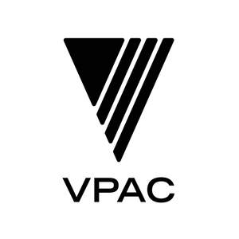

Trade Mark Journal No.2025/050 12 December 2025
UK00004275514 9 October 2025 (6,19,37)

- Class 6
- Metallic building materials; Metal building materials; Building materials of metal; Metal materials for building; Metallic building components; Metal materials for building and construction; Building and construction materials and elements of metal; Metallic building elements; Fired refractory materials of metal [building materials]; Reinforcing materials of metal for building; Building (Reinforcing materials of metal for -); Steel building materials; Awnings of metal [building materials]; Building materials (Metal -) in the form of panels; Metal reinforcement materials for building; Reinforcement materials (Metal -) for building; Building materials (Metal -) in the form of slabs; Soffits [metal building materials]; Reinforcing materials of metal for buildings; Building materials of metal with soundproofing qualities; Metal materials for construction; Building materials (Metal -) in the form of sheets; Refractory construction materials of metal; Metallic building facade elements; Archways of metallic materials for supporting plants; Arches of metallic materials for supporting plants; Building components of metal; Construction materials of metal with soundproofing qualities; Prefabricated building components [metal]; Archways made from metallic materials; Arches made of metallic materials; Cladding of metal for construction and building; Building structures of metal; Transportable metallic buildings; Metallic transportable buildings; Reinforcement materials (Metal -) for construction; Building components (Metal -) in the form of slabs; Fabricated metal components for building foundations; Portable building structures of metal; Metallic tiles for construction; Building products of metal; Building components of metal for the construction of arches; Roof materials of metal; Metal building products; Metal prefabricated elements for building; Prefabricated building elements [metal]; Prefabricated elements of metal for building.
- Class 19
- Non-metallic building materials; Building materials (non-metallic); Materials, not of metal, for building and construction; Building materials, not of metal; Materials, not of metal, for building; Non metallic transportable buildings; Building and construction materials and elements, not of metal; Panelling materials (Non-metallic -) for use in building; Laminates of non-metallic materials for use in building; Partitions being non-metallic building materials; Road building materials (Non-metallic -); Reinforcing materials, not of metal, for building; Non-metallic building materials for screeding; Planks of non-metallic materials for use in building; Bastion defence walls of non metallic materials; Non-metallic building materials having acoustic properties; Facade construction components of non-metallic materials; Building materials of glass; Glass building materials; Building materials with soundproofing qualities, not of metal; Coatings [building materials]; Refractory construction materials, not of metal; Construction materials, not of metal; Materials, not of metal, for construction; Building materials of wood; Roof construction materials (Non-metallic -); Woven materials (Non-metallic -) for use in buildings; Panelling of non-metallic materials for use in construction; Panelling materials (Non-metallic -) for use in construction; Building and construction materials and elements made of wood and artificial wood ; Foundation material (Non-metallic -) for use in building; Lime building materials; Facades of non-metallic materials; Strawboard [building materials]; Concrete building materials; Building materials consisting of glass; Portable buildings made of non-metallic materials; Intumescent building materials; Serpentine for use as building materials; Building components (Non-metallic -) in the form of slabs; Structures made of non-metallic materials; Fiberboard [building materials]; Facade elements of non-metallic materials; Construction materials with soundproofing qualities, not of metal; Roof materials (Non-metallic -); Non-metallic minerals for building or construction; Building materials of mineral fibres; Fire protection materials (Non-metallic -) for use in building; Planks of non-metallic materials for use in construction; Scaffolding made of non-metallic materials; Prefabricated building components (Non-metallic -); Interior walls of non-metallic materials; Bitumen building materials; Prefabricated elements (Non-metallic -) for building; Prefabricated building elements (Non-metallic -); Manufactured building elements (Non-metallic -); Tuff for use as building materials; Building bricks (Non-metallic -); Building materials of concrete reinforced with plastics and glass fibres; Road construction materials (Non-metallic -); Reinforcing fabrics (Non-metallic -) for building; Cladding, not of metal, for building; Cladding materials (Non-metallic -); Canopies [structures] of non-metallic materials; Expansion joints of non-metallic materials for use in building; Agalmatolite for use as building materials; Building blocks incorporating insulating materials; Poster advertising pillars [structures] of non-metallic materials; Building frames (Non-metallic -); Drywall corner bead not of metal [building materials]; Podiums [structures] of non-metallic materials; Amphibole for use as building materials; Marble [building material]; Building sheets (Non-metallic -); Non-metal cladding for construction and building; Building slabs (Non-metallic -); Casings (Non-metallic -) for use in building or construction; Changing rooms [structures] of non-metallic materials; Non-metallic building materials for draught proofing; Laminated boards (Non-metallic -) for building use; Terra-cotta [building material]; Conservatories [structures] of non-metallic materials; Roofing materials (Non-metallic -); Fireproof seals in the nature of building materials; Foundation material (Non-metallic -) for use in construction; Moveable walls made of non-metallic materials; Structural elements (Non-metallic -) for use in building; Concrete poles for use as building materials; Building materials made of rock fibres.
- Class 37
- Construction services; Building and construction services; Building construction services; Services for the construction of buildings; Construction management services; Civil construction services; Construction advisory services; Construction information services; Hydraulic construction services; Building construction advisory services; Property development services [construction]; General building construction services; Underwater construction services; Consultancy services relating to the construction of buildings; Construction project management services; Building construction and demolition services; Services for the rental of machinery for construction; Temporary structure construction services; Advisory services relating to building construction; Advisory services relating to the construction of buildings; Glaziers services for construction vehicles; Public works construction services; Building construction supervision services for building projects; Demolition services; Advisory services relating to the construction of buildings and other structures; Charitable services, namely construction; Building services; Information services relating to the construction of buildings; Building construction supervision services for real estate projects; Mechanical lifting services for the construction industry; Consultancy and information services relating to construction; Ship defence equipment construction services; Services for the renovation of buildings; Civil engineering underwater construction services; Excavation services; Infrastructure construction; Building consultancy services; Building refurbishment services; Masonry services; Carpentry contractor services; Construction; Scaffolding services; Advisory services relating to the construction of public works; Construction consultancy; Carpentry services; Consultancy services relating to the repair of buildings; Roofing services; Building project management services; Communications infrastructure construction; Paving contractor services; General building contractor services; Advisory services relating to building demolition; Building caulking services; Building construction consultancy; Installation services of building scaffolds; Services for the damp proofing of buildings during construction; Consultancy relating to residential and building construction; Machinery installation services; Quarrying services; Machinery maintenance services; Advisory services relating to the maintenance of buildings; Advisory services relating to building refurbishment; Consultancy, information and advisory services relating to the construction of public works; Advisory services relating to the installation of building automation equipment; Advisory services relating to the repair of civil engineering structures; Residential construction; Services for the rental of machinery for building; Plastering contractor services; Advisory services relating to the repair of buildings; Construction of healthcare buildings; Construction of public facilities; Plumbing services; Grouting services; Providing information relating to the construction, repair and maintenance of buildings; Building services relating to building for industry purposes; Advisory services relating to the maintenance of plumbing; Services for the redecoration of buildings; Services for the rental of machinery for civil engineering; Civil infrastructure construction; Plumbing maintenance advisory services.
Byron Howe